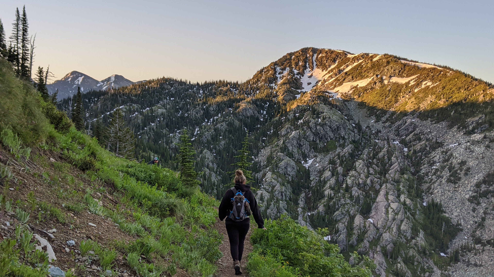

Spring is my absolute favorite season of all time, and Bigfork highlights the true beauty of this time period. Each morning begins with a sunrise of light purples, deep pink, and shimmers of bright orange. The ground that had previously been covered with close to a foot of snow now melts to reveal budding grass below.
The main reason why I love spring more than the other seasons is because of the rain. There is nothing more relaxing than the sound of rain hitting your roof, looking out the window, and seeing the water drip down your windows. More often than not, spring is cold and slushy, but in Bigfork, spring is colorful and breathtaking.